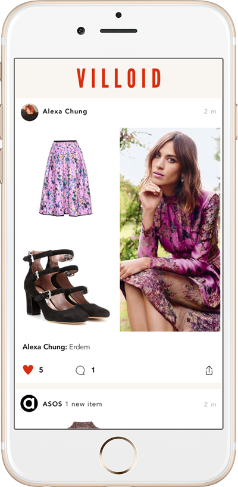
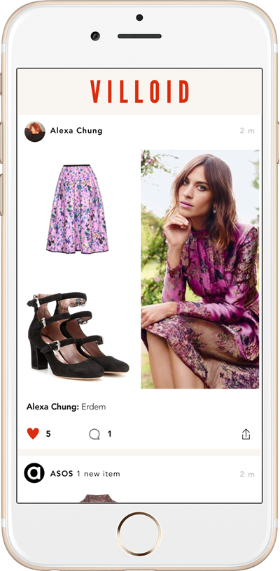

It's a tricky balance, but dressing right for an interview will do wonders for your confidence.
Read moreEarning it is no easy feat - how to be the intern they can't afford to loose, by the Hearst girls that did it themselves.
Read more
Teens, take the chance to get ahead of the pack by being the first to gain a Fashion A-level
Read moreAlumni include Alexander McQueen, Stella McCartney and Jonathan Saunders - what does it take to be a student at the greatest fashion school in the world?
Read more

 
